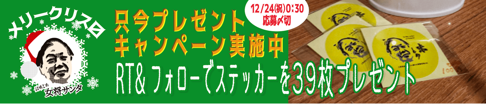
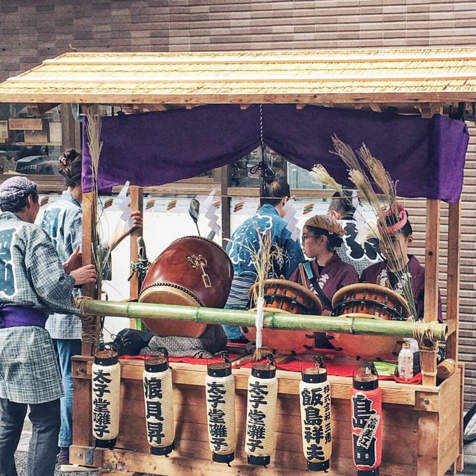
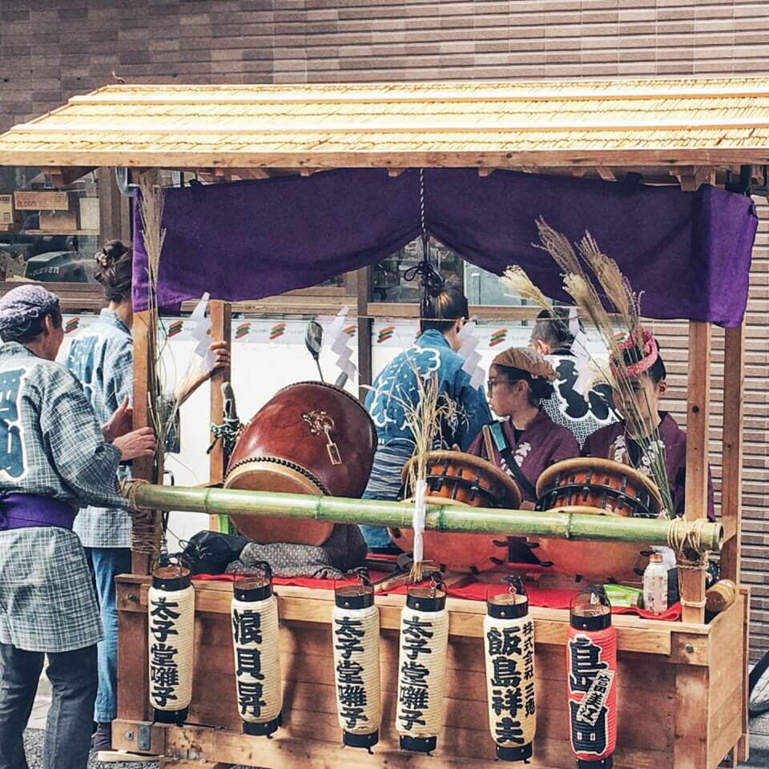
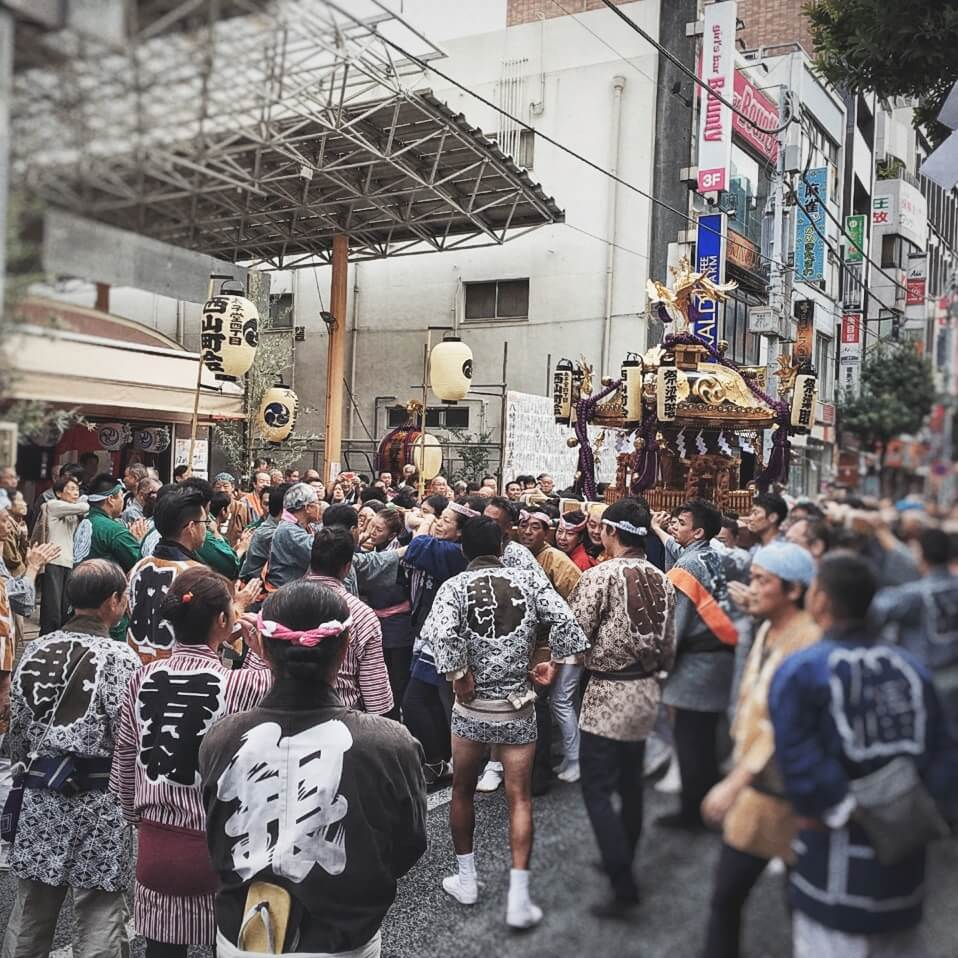
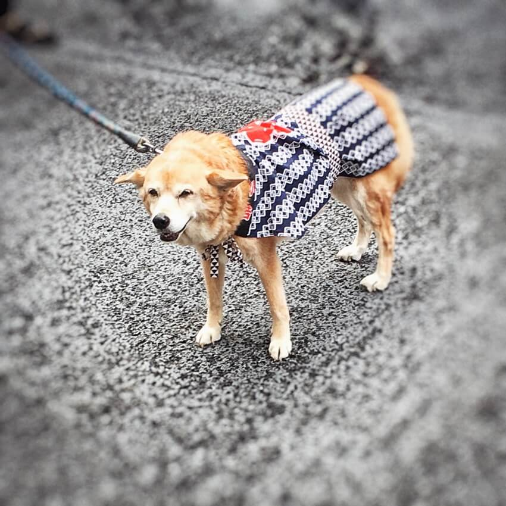
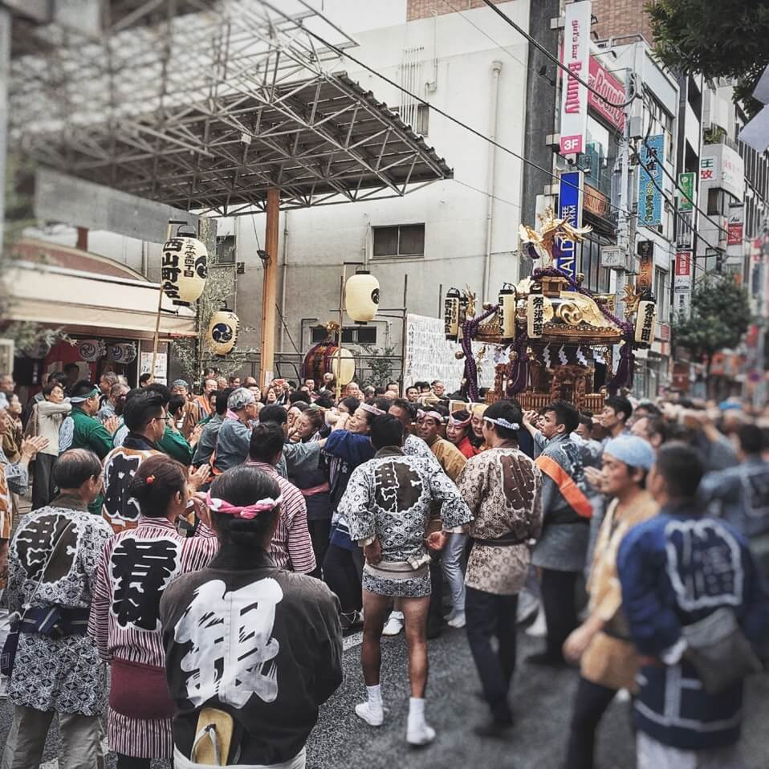
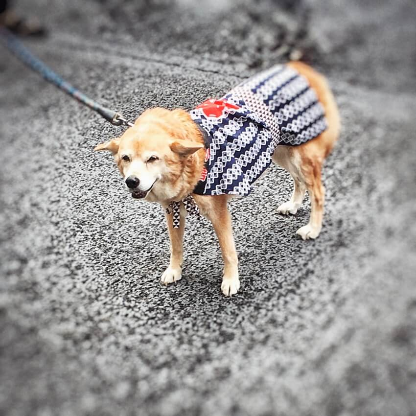
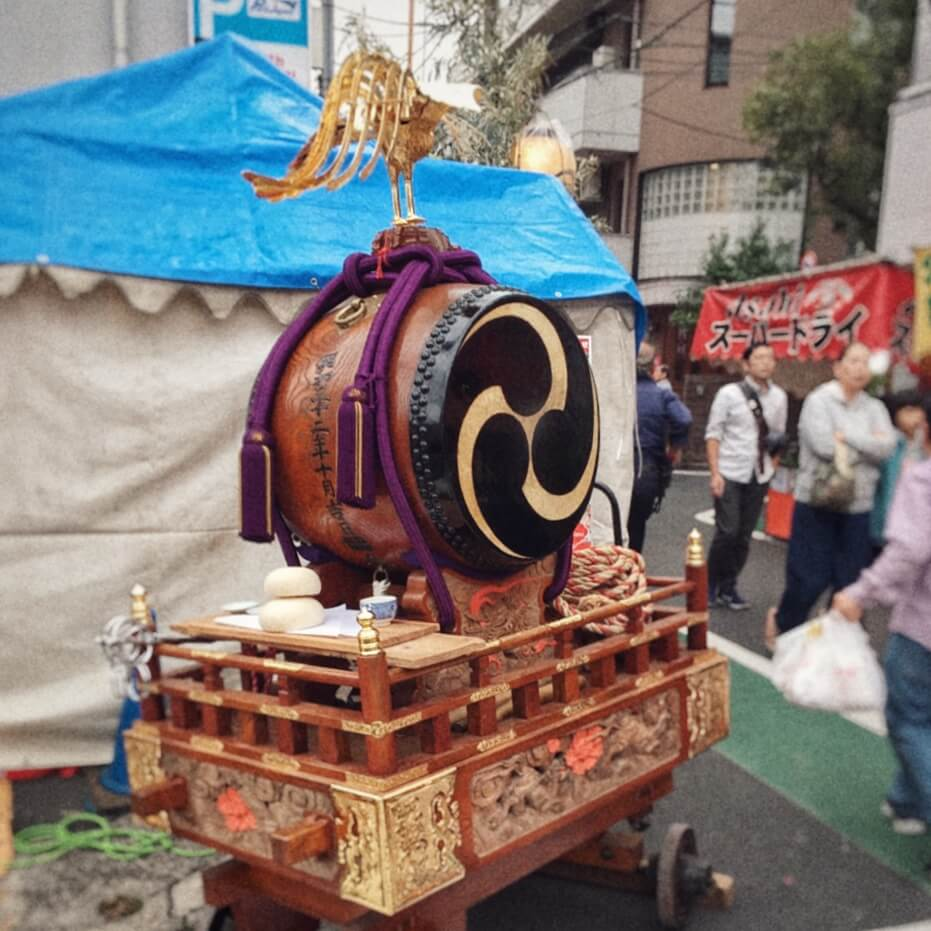
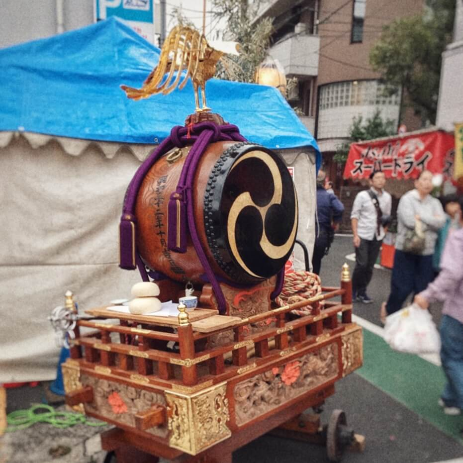

English | 日本語

https://ajitome.xyz
建替工事の為
休業中
昭和から三軒茶屋にのれんを構え半世紀...かわらず懐かしい憩い処。
メニューが多くて話題の料理店。美味しい料理とお酒で癒しのひと時を...
update
〜 休業中に迎えた2回目の八幡神社お祭を終えて 〜
平成はインターネットが人の生活を激変させ「ググればいいや」と検索の時代として、後世の歴史教科書に登場するのかもしれない。未来の教師は生徒たちを前に、覚えきれず検索せなばならぬほど膨大な情報が駆け巡る社会にあって、ひとつゝの情報を、見つめる、味わう、想いをはせる、に時間が費やせず、ペットの子犬が成長するが如し速さで変わりゆく時の流れに戸惑うものもいた…と読み聞かせ、この時代に生まれた俗語ドッグイヤーにマルをつけ「ここアンダーライン！試験に出るから」と語気を強めるのかもしれない。当更新では、そんな平成さいごの秋の想い出を、この１枚の写真に写る味とめヒストリーを交え紹介したい。
※2016年10月10日撮影
先日たちは後世に伝えるべく、情報の記録、伝達、再現する術をこれまでも多く残しくださっている。古来の文字はもとより、印刷、音楽、写真、映像...インターネットも、またそのひとつに加わるのだろう。
※三軒茶屋の古写真は権利処理したうえで掲載しております。
この景色は昭和43年(1968年)の我が街三軒茶屋だ。当記事をお読みいただく方のおおくはご存知と願うが、三軒茶屋すずらん通りで１年前まで50年老舗割烹味とめを営んでまいった。当サイトはそのお店のホームページである。ながらくの休業により皆さまの中でも過去のひとつ、想い出として、記憶のなかに埋もれつつあるかも知れぬと懸念を抱きながら当更新をしている。当店が味とめとして営業しはじめたのはこのモノクロ写真の頃。平成のひとつ前である昭和後半のことだ。"いもむし"の愛称で親しまれた路面電車の玉川線(明治40年開通)が廃線となり今の東急世田谷線として残ったのは、この翌年のことである。三茶のランドマークキャロットタワーはもちろん無かった。

※35年以上前に撮影されてもの
店主実姉の夫が写真好きだった
当時を知らずに記事更新とは恐縮だが、埋もれ、薄れゆくと先に述べた懸念を抱くに１年という期間は十分である。決して、ひとときではなく、皆さまの生活、皆さまの人生においては区切りのつく期間であろう。 50年の歴史においては、お出かけ前の身支度30分ほどの時間であったとしても、ドックイヤーもはやばや死語となるご時世...そんな年月の一区切りである１年を経ても、営業再開にこぎつけられていない点をまずはお詫び申しあげたい。 当初再開予定から遅れが生じている経緯は後述するが、休業中に2回目を迎えることとなった八幡神社のお祭が去るにあった。
地元の方でもない限りご存知なくて当然なので補足する。八幡神社は、現在新ビル工事中の当店が位置する太子堂の地元に古くからある神社で、
さて、イントロダクションの写真だが、数年前のお祭りで撮影した神輿の若い担ぎ手さん達のオフショット。柵の上に座ってお行儀が悪いなど責めるつもりはなく、神社の広場で地元の仲間とまったり過ごす祭開催中の何気ないワンシーンだ。イントロダクションので通りこの写真には当店にまつわる古い事実が隠されている。神社の増築や改築には地元民の支援がともなうもので、写真の彼らが腰かける柵には、昭和の頃に支援されたかたがたの名が刻まれている。
今年の春先、古くから常連さんから「辻って石碑あったけど？」とお知らせいただく。辻家一同には寝耳に水で、この写真撮影当時も気がつきもしなかった。この知らせで店舗休業中にその存在をはじめて知った先代「辻トメ」との刻銘。
先代「辻トメ」は店主女将の他界した旦那の母にあたる。先代も、次から次へとアイデアを具現化し、行動力のあるパワフルで豪快な女性であったと聞く。こんにちの当店が割烹としての歴史を紡げるのも先代あってのこと。辻家はもともと武具店を営んでいたが、第二次世界大戦敗戦後の混沌とした昭和の世田谷下町三軒茶屋で飲食店に
破天荒な店主の言動もまた先代から引き継ぎしことなのかどうかはここでは触れない。旦那の他界後、先代同様、結果的に女手ひとつで店を切り盛りしてきた店主女将からのご挨拶をつづけさせていただく。
天候に恵まれ楽しくお祭に参加いたしました。昨年10月からの休業の為、昨年同様に私の単独企画での参加となりました。休業中につき久しぶりに八幡神社でゆっくり過ごせました。賑わう参道の露店を楽しみながら、神社にお参りし、
神社では当店の先代辻トメさんの刻銘も見つけらることができました。学生時代から味とめに通ってくださる常連さんに教えていただいてたのですが、ようやくトメさんにもご挨拶することができました。
先代トメさんは「2人の子供のために」と
『先代辻トメさんの刻銘まえで』
今でも私はお料理の勉強しながら当店営業再開に備えております。今日は、
味とめ店主・辻教子
当店関係者も知らずの事実に、先代の大きさを感じるとともに、引き継ぎ、歴史を途絶えさせることなきよう来年春皆さまと再会できるようこの後の準備を進めて参りたい。
当店建替工事の為の休業後から半月ほどで、昨年の八幡祭を迎えた。まだ旧店舗解体前ということもあり、女将単独企画によるブルーシート祭を開催した。その後、旧店舗解体工事がなされ、地盤の丈夫さを調べる地質調査を実施してみたところ、地層深くに水が流れている事が判明。それによりビル支柱を更に深くまで打つ工事計画の見直しが必要となった。しかも、地層からは古い井戸がみつかった！太子堂のこの一帯は川があったとのいい伝え(*)を女将も、先代トメさんより聞かされてた事があったそうだが、井戸となれば、無下に埋めてしまっては水の神さまの怒りを買ってしまう。地盤固定のコンクリート養生では水の神さまが苦しまぬよう空気孔を追加した。古い店舗ゆえに想像もつかない事がつきまとう。当店旧店舗は、すずらん通り西友側入り口付近に位置したが、通りの各店舗の電話回線の終端装置が当店に集中して設置されていた。その移設作業など、古い店舗解体工事とは決して容易ではなく、工事計画見直しによる申請や工期再見積もりなどの影響もあって、 当初予定の営業再開が叶わず、今秋、休業期間中に2度目の八幡祭を迎える事となってしまった。
女将がふくろう祭出張を決断の「最近神社に
いい伝えによれば源平の頃より存在する八幡神社の正面口には
※八幡神社で飼育され見物できるウサギさん
なお、弁天社では琵琶の形状に近いとして福を呼ぶシャモジが売られている。
なんでもかんでも神だのみするのはよろしくないが、水のトラブルで工期延長を余儀なくされた当店としては水の神さまである八幡神社の弁天さまに是非ともあやかりたい。
(*)謝 辞
本記事更新にあたり、勝手ながら"太子堂八幡神社 略記"はじめ八幡神社さま掲示物の参考、および、撮影の協力をいただきました。
また、太子堂の中島薬局さまには"大志の学び舎世田谷区立太子堂小学校創立九十周年記念誌"閲覧ご協力をいただきました。
ご両者さまへのご協力に心から感謝の気持ちとお礼を申しあげます。
女将さん単独キャンペーン
三軒茶屋すずらん通り大衆割烹味とめ
https://ajitome.xyz
営業時間：月～金 9:30～23:00(OL) 土・日・祝 15:30～23:00(OL)
定休日：不定月曜休
休業中のお問合せ
03-3422-5845


 

 



 
